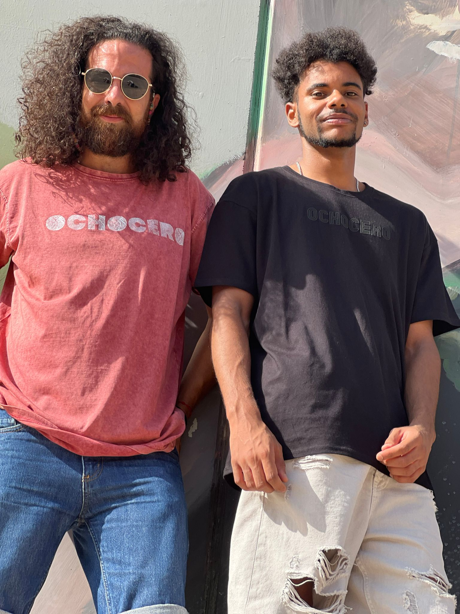
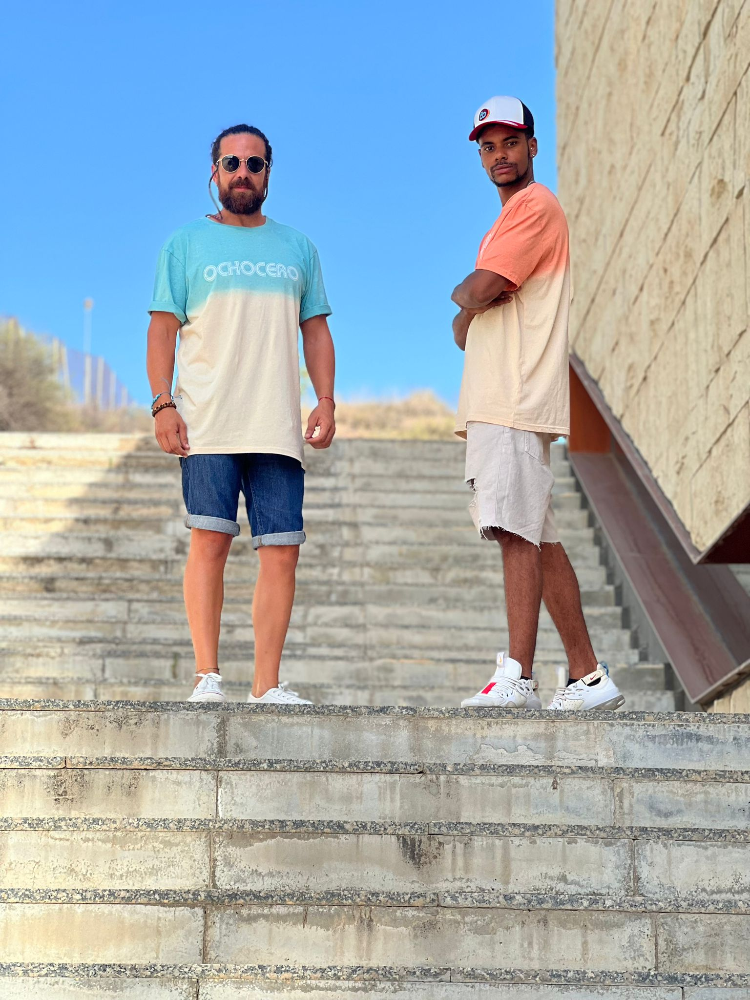

Frame 01
SCENE 01 / THE BROADCAST
OCHOCERO
Analog luxury transmitted like a late-night station: deliberate, rare, and slightly unstable.
EXPLORAR DROPSCENE 02 / MACRO DETAIL
Texture as evidence.
A close read of the garment surface, slowed down until the fabric starts to feel archived.

SCENE 03 / THE PHILOSOPHY
Recovered History.
Each piece is treated as a retrieved signal: restored, re-edited, and returned as a contemporary object with the memory of another decade inside it.
SCENE 04 / THE ARCHIVE
A slow parade of garments.

Frame 02
VHS Tailoring
Frame 03
Memory Shell
Frame 04
Static Evening
SCENE 05 / THE SIGNAL
Enter the archive.
The line goes dark, then returns cleaner than before.
ENTRAR AL ARCHIVO